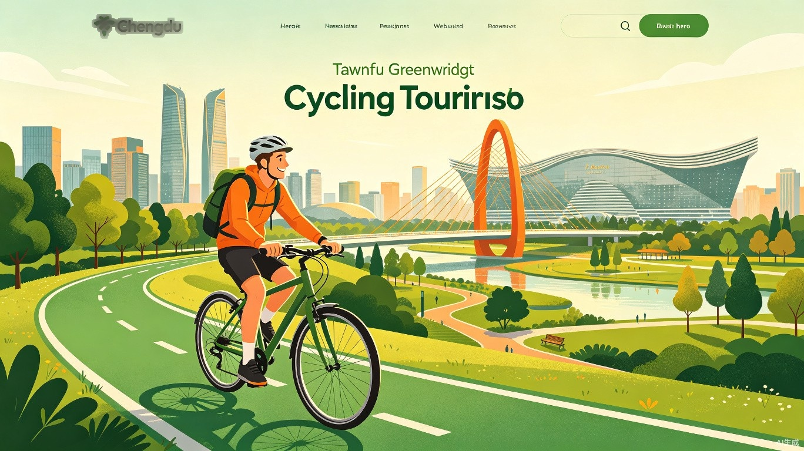

The ultimate guide to exploring Chengdu's greenways, hidden alleys, and countryside — all from the seat of a bicycle.
One of China's most bike-friendly cities, with world-class greenways and a vibrant cycling culture.
14+ hand-picked routes across 6 themes — city rivers, wetlands, new district parks, countryside greenways, long-distance challenges, and featured theme rides. Tap "Open in Maps" to navigate.
Route: Wenshu Monastery → Chenghua Park → Chengdu 339 (TV Tower) → Dongfeng Bridge → Chunxi Road → Tianfu Square → People's Park → Kuanzhai Alley → Qintai Road → Qingyang Palace → Du Fu Thatched Cottage → Huanhuaxi Park → Wuhou Shrine (13 iconic landmarks)
Why this route: The ultimate Chengdu city highlight ride — every stop is a must-visit landmark. Start from the Buddhist tranquility of Wenshu Monastery, pass through the neon-lit 339 TV Tower, shop at Chunxi Road, stroll the historic Kuanzhai Alley, pay homage to the poet Du Fu, and end at the legendary Wuhou Shrine. Ride any section you like — you don't need to complete the entire route!
Route: Dongmen Bridge → Hejiang Pavilion → Anshun Bridge → Jiuyan Bridge → Wangjiang Pavilion → Donghu Park → Dongli Emerald Lake → Shahe Greenway → Tazishan Park → Shuanggui Park → Duobao Temple → Xinhua Park → Living Water Park → Return to Dongmen Bridge (13 nodes)
Why this route: A compact urban loop following Chengdu's eastern river system, weaving through 13 scenic nodes including historic bridges, parks, and temples. Perfect for a relaxed afternoon ride.
Route: Shahe → Fuhe → Nanhe loop, connecting Chengdu's central city water systems
Why this route: A scenic grand loop tracing Chengdu's three major urban rivers. At 40.9 km with an average speed of 9.55 km/h, it's a relaxed sightseeing ride through the heart of the city's waterways.
Route: Donghu Park → Jincheng Park → Zhonghe Wetland Park (10 park nodes, greenway interchange)
Why this route: Seamlessly connects the Jinjiang Greenway with the Ring Greenway, passing through 10 park nodes. A flexible route where you can choose sections from 15 to 25 km depending on your energy level.
Route: Qinglong Lake Wetland Park → Yushi Wetland Park → Huatian Wetland → Bai Lu Wan Wetland Park
Why this route: A gentle 15 km ride through four distinct wetland ecosystems on the southeastern section of Chengdu's Ring Greenway. Birdwatcher's paradise with rich biodiversity.
Route: 5 wetland ecological nodes along Xuyan River and Baitiao River in Sandao Yan, Pidu District — includes Chengdu's first "Sky Greenway" (3.5m wide elevated cycling path)
Why this route: A compact 7 km ride featuring Chengdu's first elevated "Sky Greenway" — a 3.5-meter-wide cycling path suspended above the wetlands. Unique perspective on the river ecosystem.
Route: Jincheng Lake Park → Yuedong Cailin (Colorful Forest) → Mengchong Paradise (Pet Park) → International Intangible Cultural Heritage Expo Park
Why this route: A 24 km ride through the southwestern section of the Ring Greenway, featuring the colorful forest, a pet-friendly park, and culminating at the UNESCO Intangible Cultural Heritage Expo Park.
Route: Qinglong Lake Wetland Park → Dongfeng Canal Greenway → Dong'an Lake Sports Park → Yimahe Park Phase II → Longquanshan Urban Forest Park
Why this route: A 30 km journey from the wetland tranquility of Qinglong Lake to the Olympic-standard Dong'an Lake Sports Park, finishing at the foothills of Longquan Mountain. A perfect blend of urban park design and natural landscape.
Route: Luxi River Ecological Zone → Tianfu Park → Xinglong Lake → Science City
Why this route: A 41 km loop through Chengdu's futuristic Tianfu New District. Ride past the tech hub of Science City, the serene Xinglong Lake, and the lush Luxi River ecological corridor. 294m elevation gain adds a gentle challenge.
Route: Xinjin Nanhe River greenway — entirely flat, zero elevation gain
Why this route: A 29 km riverside cruise with zero climbing — the flattest route in the collection. Perfect for recovery rides, family outings, or anyone who wants to enjoy the countryside without breaking a sweat.
Route: Xindu District, along Pihe River, passing through Jinmen Scenic Area
Why this route: A 15 km countryside ride along the Pihe River in Xindu District, featuring the historic Jinmen Scenic Area. Experience the charm of Chengdu's northern suburbs with riverside paths and cultural landmarks.
Route: Qingshui River → Tuojiang River greenway, within Pidu District
Why this route: A 44.6 km riverside ride with an impressive average speed of 20.51 km/h — the fastest-paced route in the countryside category. Follow two rivers through Pidu District's scenic countryside.
Route: Wenjiang Beilin Greenway Grand Loop, through Wenjiang's pastoral countryside
Why this route: The longest countryside route at 52.5 km with 463m elevation gain. A true intermediate challenge through Wenjiang's northern forest greenway, offering expansive farmland views, bamboo groves, and authentic rural Chengdu landscapes.
Route: Shuxiu Park → Jinjiang Greenway North Section → Dujiangyan Scenic Area, following the Jinjiang River upstream
Why this route: The ultimate challenge — a 58.5 km ride tracing the Jinjiang River upstream from Shuxiu Park all the way to the UNESCO World Heritage Dujiangyan Irrigation System. Ride through history, from the plains of Chengdu to the foothills of the Tibetan Plateau.
Route: Qiong Kiln National Archaeological Park → Chalan Linpan → BMW Cycling Park → Pingle Ancient Town
Why this route: China's first tourism-only dedicated bicycle highway! A 12.5 km stretch of colored asphalt built exclusively for cyclists. Ride from an archaeological park through tea fields and bamboo forests to the historic Pingle Ancient Town — a truly unique cycling experience.
Two ways to get a bike: shared bikes for quick trips, or rental shops for mountain bikes, road bikes, and full gear.
Scan-to-ride bikes available everywhere in Chengdu. Best for short city rides and greenway trips.
| App | Pricing (Regular) | How to Unlock | Penalty |
|---|---|---|---|
| 🟡 Meituan | ¥1.80 / 10 min + ¥1.00 / 15 min |
Meituan app or WeChat | Outside zone ¥10 No-park zone ¥1–20 Off-spot ¥1–15 |
| 🔵 Hello | ¥1.80 / 10 min + ¥1.00 / 15 min |
Hello app or Alipay | Outside zone ¥10–20 |
| 🟢 Qingju | ¥1.80 / 10 min + ¥1.00 / 15 min |
Didi app or WeChat | Outside zone ¥10 No-park zone ¥20 Off-spot ¥5 |
💡 Buy a Riding Card — Much Cheaper!
| App | Card Price | Perk |
|---|---|---|
| 🟡 Meituan | Riding Plans | Up to 60 min free per ride |
| 🔵 Hello | As low as ¥0.50/ride | Multi-ride packs available |
| 🟢 Qingju | As low as ¥0.52/day | Unlimited rides per day |
If you plan to ride more than twice a day, a riding card pays for itself immediately!
🚀 Shared Bikes Are Getting Better!
Chengdu's shared bikes are constantly upgrading. Newer models now feature:
Also look out for Electric Shared Bikes (⚡ pedal-assist, great for long greenway rides!) and Limited Edition Purple & Pink bikes 💜💗 — super cute and perfect for photos!
Chengdu's metro network spans 14+ lines covering the entire city. Take the metro to skip the heat and traffic, then hop on a shared bike right at the station exit to reach your destination's doorstep. The perfect summer strategy!
For longer rides, performance bikes, and full equipment. Great for countryside routes.
| Shop | Bike Types | Price (per day) | Location |
|---|---|---|---|
| WeCycle | Road / Mountain / City | ¥80–200 | MixC Mall, Chenghua |
| Trek Store | Road / Mountain | ¥150–300 | Multiple locations |
| Giant Store | Road / Mountain / Hybrid | ¥80–180 | City-wide |
| Greenway Stations | City / Hybrid | ¥30–60 | Along Tianfu Greenway |
You need one of these to unlock shared bikes and pay for everything in Chengdu. Here's how to set them up.
Pro tip: Alipay supports English UI. Enable it in Settings → Language.
Pro tip: WeChat's UI is mostly Chinese. Use Alipay if you prefer English.
Stay safe and respectful on Chengdu's shared cycling paths.
20 km/h max on greenways. Slow down near children and pedestrians.
Always ride on the right side. Pass on the left with a bell ring or verbal warning.
Helmets are recommended for shared bikes, road bikes, and mountain bikes. Helmets are mandatory for e-bikes.
Don't ride two abreast. Keep the path clear for faster cyclists and pedestrians.
Chengdu summers are humid (30–35°C). Sunscreen, sunglasses, and water are essential.
Summer thunderstorms are common. Greenways can be slippery after rain — ride cautiously.
Your phone is your map, payment, and bike key. Carry a power bank for long rides.
Police: 110 | Ambulance: 120 | English-speaking police hotline: 12367
Join local cycling events, races, and community rides. Follow our RED account for real-time updates.
Annual event — 16 international teams race the 100 km greenway. Amateur sessions available.
Weekly Saturday morning ride. English-friendly. 30–50 km, mixed terrain. Meet at WeCycle MixC at 8:00 AM.
Casual Sunday afternoon ride following the "draw a panda" route. 12.7 km, easy pace. Check our RED for details.
Night rides, full-moon greenway rides, cycling + hotpot tours, and photography rides. Subscribe to our RED account.
Essential links for planning your trip — from metro maps to visa info.
Official English portal for Chengdu city — news, policies, and city info.
Comprehensive English travel guide covering attractions, food, and transport.
Chengdu's official English lifestyle & tourism portal — events, dining, and culture.
English Wikipedia page with full metro map and line information.
Official Tianfu Greenway website (Chinese) — maps, photos, and park info.
Book high-speed trains to cities near Chengdu (Dujiangyan, Leshan, Chongqing).
English-friendly platform for flights, hotels, and attraction tickets in China.
Official visa application service center — check requirements and apply online.
Book flights to Chengdu Shuangliu (CTU) and Tianfu (TFU) international airports.
Get the latest route updates, event announcements, and cycling tips from our community on RED.
Find us on RED for bilingual cycling content, route photos, event calendars, and real-time community updates. Even if you don't read Chinese, our posts include English captions!
📕 Open in Xiaohongshu (RED)RED ID: Search "ChengduCycleGuide" or scan the QR code in our posts